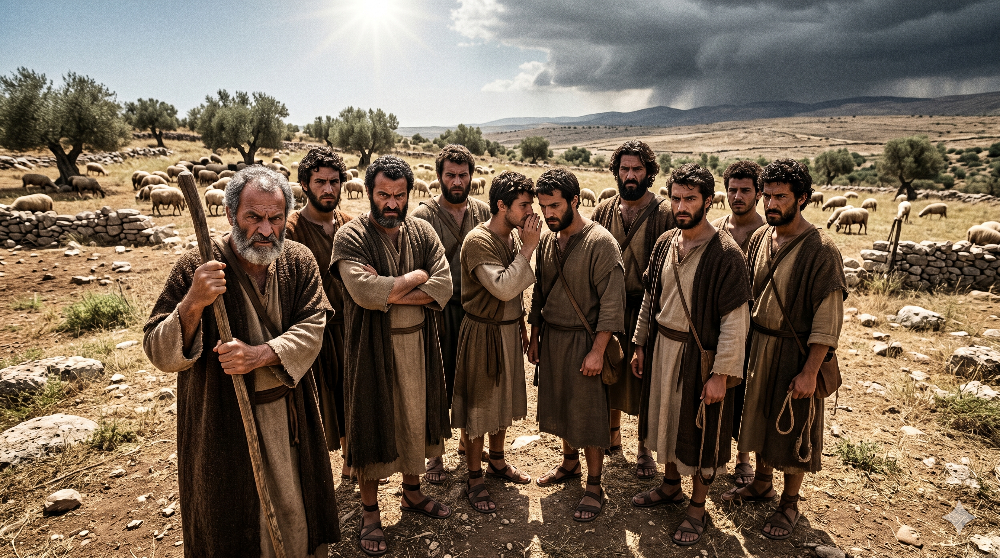

채색옷을 입은 요셉을 바라보며 흐뭇해하는 늙은 야곱 — 편애의 그림자가 다음 세대에도 드리우는 순간
요셉은 노년에 얻은 아들이므로 이스라엘이 여러 아들들보다 그를 더 사랑하므로 그를 위하여 채색옷을 지었더니 그의 형들이 아버지가 형들보다 그를 더 사랑함을 보고 그를 미워하여 그에게 편안하게 말할 수 없었더라 … 그 아버지가 그를 꾸짖고 그에게 이르되 네가 꾼 꿈이 무엇이냐 나와 네 어머니와 네 형들이 참으로 가서 땅에 엎드려 네게 절하겠느냐 그의 형들은 시기하되 그의 아버지는 그 말을 간직해 두었더라 — 창세기 37:3–4, 10–11
이 본문은 야곱 생애의 가장 아이러니한 장면 중 하나입니다. 어린 시절 아버지 이삭의 편애에서 소외되었던 야곱, 어머니 리브가의 편애 속에서 형을 속여야 했던 야곱, 라반의 집에서도 레아와 라헬 사이의 사랑의 불균형으로 고통받았던 야곱 — 그 모든 경험을 거치고도 그는 똑같은 죄를 범합니다. 열두 아들 중 유독 요셉을 편애한 것입니다. "노년에 얻은 아들"이라는 인간적 이유, 사랑하는 라헬의 아들이라는 감정적 이유가 있었지만, 그 편애는 곧 가정을 지옥으로 만들었습니다. 채색옷 하나가 상징이 되어, 형들은 요셉에게 "편안하게 말할 수조차 없는" 관계가 되었습니다. 편애는 언제나 가정을 깨트리는 침묵의 독입니다.
그러나 이 본문에는 또 다른 층위가 있습니다. 요셉의 꿈은 단순한 소년의 자랑이 아니라 하나님의 계시였습니다. 야곱은 아들을 꾸짖으면서도 "그 말을 간직해 두었다"고 합니다 — 그는 그 꿈이 단순한 환상이 아님을 직감했습니다. 이후 요셉이 형들의 미움 때문에 애굽으로 팔려가게 되지만, 그것이 결국 온 가족을 기근에서 구원하는 통로가 됩니다. 야곱의 실수는 참혹한 결과를 낳았지만, 하나님은 그 실수마저 구원의 도구로 사용하셨습니다. 이것이 우리 인생의 깊은 신비입니다 — 인간의 실패가 하나님의 계획을 막을 수는 없습니다.

한쪽에 모여 분노와 시기로 요셉을 노려보는 열 명의 형들 — 편애가 만든 쓴 뿌리
야곱의 이야기는 우리에게 가슴 아픈 질문을 던집니다. 우리는 왜 자신이 받았던 상처를 그대로 다음 세대에 반복하는가? 야곱은 편애의 고통을 누구보다 잘 알고 있었습니다. 그런데도 그는 같은 죄를 범했습니다. 죄의 패턴은 본능보다 깊어서, 의식하지 않으면 대물림됩니다. 당신의 부모가 당신에게 입힌 상처가 있다면, 그것을 자녀에게 반복하지 않기 위해 기도하고 깨어 있으십시오. 편애, 비교, 차별 — 이것들은 가정 안의 조용한 독약입니다. 오늘 당신의 자녀들을 하나하나 하나님 앞에 그대로 인정하고 사랑하는 연습을 하십시오.
동시에 이 본문은 깊은 소망을 줍니다. 당신의 가정에 이미 분열과 상처와 편애의 흔적이 있다 해도, 하나님은 그 깨어진 조각들을 사용하실 수 있는 분이십니다. 요셉의 이야기가 곧 증언하듯, 오늘의 고통이 내일의 구원의 씨앗이 될 수 있습니다. 부모의 실수를 덮으시는 하나님, 자녀의 상처를 빚어 영광의 그릇으로 만드시는 하나님 — 그분을 신뢰하십시오. 당신의 가정은 결코 끝난 것이 아닙니다. 하나님은 여전히 그 이야기를 쓰고 계십니다.
편애의 상처를 받은 야곱도 편애를 물려주었습니다.
상처의 대물림을 끊을 수 있는 사람은 오직 당신뿐입니다.
그러나 설령 실패했어도 — 하나님의 섭리는 끝나지 않습니다.